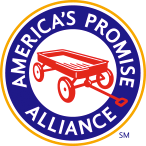

In 1999, the Brockton Blueprint Coalition began looking at different frameworks for addressing youth issues. The Blueprint Coalition consists of the area directors of the State Health and Human Service agencies, as well as representatives from local and county government. After reviewing a number of models, they chose America’s Promise for its strong research, but simple language. The Five Promises are easy to understand and at the time created the common language Brockton needed to talk about youth issues.
After a lot of planning, Brockton’s Promise kicked off in the Winter of 2003 with over 150 community members attending an event at the Shaw’s Conference Center. It was at this meeting that Brockton formed the Five Promise Teams. Each team was charged with helping to fulfill their promise for Brockton youth. Three years later, the entire management structure has been reorganized to help strengthen leadership and communication. Today, there are six agencies (MA Society for the Prevention of Cruelty to Children, Community Connections of Brockton, Mayors After-School Taskforce, Healthcare of Southeastern MA, Inc., Massasoit Community College and Stonehill College) that host our Promise Teams. These agencies provide the administrative leadership that is essential to sustainability. In addition, they attend monthly Steering Committee meetings to discuss joint projects and common goals. Partners on the Steering Committee have been able to leverage almost $400,000 in grant and private funding for youth related initiatives.
All Brockton’s Promise Steering Committee and Promise Team meetings are open to the public. We invite you to Join us.